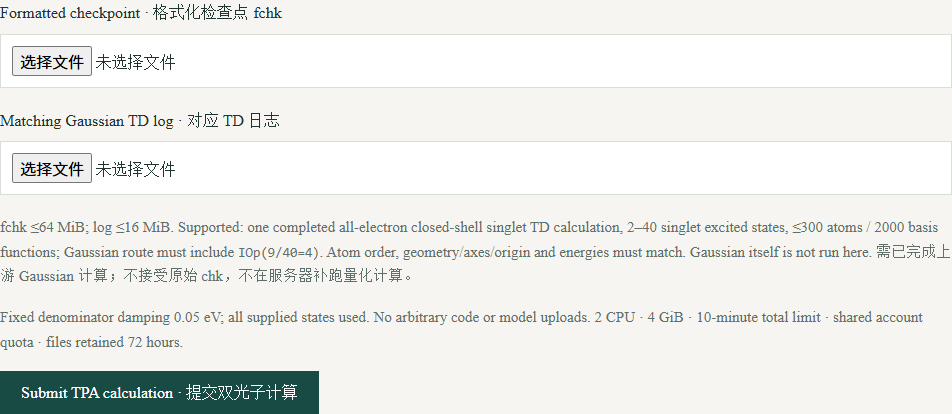
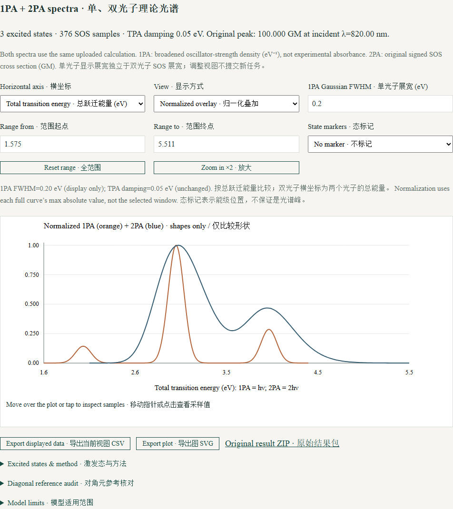

双光子吸收 · 在线使用指南
上传配套的 fchk 与 TD log，在浏览器中查看和比较单、双光子理论光谱。
截图来自公开教学数据或合成示例，不含用户账户、任务令牌或未公开研究数据。点击图片可放大。
1. 登录与任务状态
使用已批准的账户登录。新用户先注册并验证邮箱，管理员批准后才能提交计算。
各工具共用账户配额：同时1个运行任务、2个排队任务，每天最多提交10次；结果保留72小时，需要长期保留时请自行保存。
2. 准备匹配的 Gaussian 输出
上传同次计算的格式化检查点（fchk ≤64 MiB）与已完成的 TD 日志（log/out ≤16 MiB），Gaussian 路由需含 IOp(9/40=4)。
支持全电子闭壳层单重态、2–40个单重激发态、最多300个原子和2000个基函数。几何、原子顺序、坐标系、原点和能量需匹配。不接受原始 chk，也不补跑 Gaussian。

3. 运行固定 SOS 工作流
提交并等待后台任务。Multiwfn 提取跃迁／永久偶极矩，再由有限态 sum-over-states（SOS）程序后处理，整项任务最多10分钟。
永久偶极矩先统一电子贡献定义，再保存基态参考副本并扣除对角元；非对角跃迁偶极矩保持不变。结果包含参考扣除核对记录。
4. 比较单、双光子光谱
用分面图保留独立物理单位，或归一化叠加比较形状。横坐标可选入射波长或总跃迁能量；同一终态的双光子共振波长约为单光子的两倍。
1PA 是每 eV 的展宽振子强度密度，不是实验吸光度；2PA 为有符号 SOS 截面（GM）。调整单光子显示展宽不会重算双光子；态标记是能级位置，不保证是峰位。
可直接查看图、选择态和坐标范围；CSV、SVG 及原始结果包按需导出。

遇到问题
输入被拒绝时先检查计算是否完成、IOp 设置及原子／几何是否匹配。单光子数据缺失会明确提示。
负 SOS 响应会保留并标记。有限态收敛、展宽与前因子仍需科学审查；原始 SOS 与 Multiwfn 文献见软件介绍页。